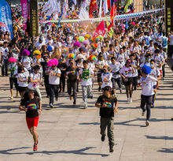
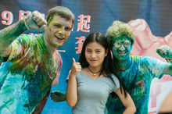
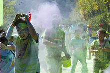

“彩色跑”（rainbow run） 不分年老，不分界线。历史追溯于2013年5月。，朱溪方岩要举行中秋赏月庆典，推出方岩风景区，眼球碰地球的周年庆也同时举行，作为宣传的两大创举之一，一是计划在天池露营搭建一个水上赏月舞台，二就是进行彩色跑，（那时定下的名称叫五色跑），为了达到视觉效果并与中国传统相统一，方案中计划用五谷的粉末按分封时的五色土青、红、白、黑、黄五种颜色染色，然后由方岩脚跑到朱溪，一路相互抛洒成彩人，到达朱溪后，再进行泼水节，洗去彩色，以达到视觉的冲击力。因种种因素，没能举行，后来组织者吸取了印度洒红节的部分元素，对名称与细节进一步改良，由五色跑更名为彩色跑，跑步过程中经过不同的彩色站，会被从头到脚抛撒彩色粉末，形成正式彩色跑形式。
“彩色跑”以“绿色·健康·运动”的宗旨在整个华南区域传递青春正能量，色彩抢占眼球席卷华南。
| 中文名 | 彩色跑 |
| 外文名 | runbow run |
| 产生时间 | 2013年5月 |
| 产生地 | 朱溪方岩 |

彩色跑Rainbow Run，是由印度传统节日“洒红节”延伸而来，提倡健康生活、专注快乐跑步。
2013年，浙江省旅游节放在仙居举行，朱溪镇政府计划借这个东风，推出方岩天池峰风景区，交由仙居登山协会与眼球碰地球户外俱乐部制定推广方案，王者近水、居士、项青锋三人组成策划小组，计划把朱溪方岩天池峰与粮食产地杨丰山——摄影爱好者拍摄梯田的著名摄影基地结合在一起进行宣传，其中与彩色跑相关的方案设想是：
食有五谷，土分五色，天地蕴五行，五行作而万物生，杨丰山为著名的粮食产地，从来有丰收时庆典的传统，方案中计划用五谷的粉末按分封时的五色土青、红、白、黑、黄五种颜色染色，然后由方岩脚跑到朱溪，一路相互抛洒成彩人，到达朱溪后，搭台联欢，再进行泼水节，洗去彩色，以达到视觉的冲击力。
一开始，这部分的政府计划预算为60万元，后来，因为考虑到安全、环保、费用等等原因，政府对方岩天池峰与杨丰山的宣传方案喊停，没办法，只能由俱乐部自个集资举行了一次中华户外网超版会议，但关于五色跑的讨论却在各QQ群里传了开来。一些有敏感性的户外组织者在五色跑方案中看到了这个活动方案中最出彩的部分——能形成强烈的视角冲击力，而彩虹代表着希望，名称比五色跑更通俗易懂，在参考了印度洒红节、西方番茄节等类似的节日狂欢后，经过精心策划，把一路上抛撒彩色粉的活动正式定名为彩色跑，并完善了各个细节，形成彩色跑模式。
彩色跑从2014年4月份开始举行，很快地被广大驴友所接受，并迅速传播到全国各地，成为2014年最流行的户外活动之一。

仙居绿道网由1条主绿道、多条辅绿道构成“叶脉型”绿道网结构。主绿道（主脉）总长112公里，打造“神仙情缘”主题，主要沿仙居永安溪边，沿线串联了仙居县大部分自然与人文景观点。
2014年10月19日，由中华户外网承办的“绿色永安溪活力彩色跑”活动强势回归仙居，在永安溪绿道火热启动，参加人数三千多人。慈溪户外运动协会与眼球碰地球户外俱乐部联合组队，打出“不挂彩，无青春！”的旗号，夸张的彩发与头饰、滑稽的充气超人与小蜜蜂卡通，劲爆的热舞，活动还没开始，就引来运动员纷纷合影。其它运动员用五彩缤纷的颜色装扮自己。
本次彩色跑[4] 从永安公园音乐喷泉开始到浮石园站小环线，回到喷泉处，活动全程共4.3公里，3000多名活动参与者不仅可以体验到欢乐的“色彩大战”，同时也可全面领略绿道沿线优美的自然与人文景观。上午不到8点，永安公园就聚集了数千名前来参与活动的选手和市民，他们中绝大多数是十几岁至三十几岁的青少年，大部分穿着统一的白色T恤，很多人还戴着五颜六色的头巾和防护眼罩。
10点一到，随着开跑指令发出，参赛选手用最疯狂、最多彩、最纵情的姿态狂欢奔跑着,除了互相抛撒粉末，沿途主办方还“埋伏”了大量“投弹手”，一波接一波的五彩粉末铺天盖地撒下来，一个个参加者都成为彩人。
从2014年4月份开始，国内的彩色跑活动，逐渐流行起来，其起源地主要有两种。
一种源于印度洒红节，由广东省胜美广告引进，并获国家商标局批准认证成为广为人知的品牌活动。
另一种起源于美国，由北京奥运城市发展促进中心、IMG公司2013年引进。
